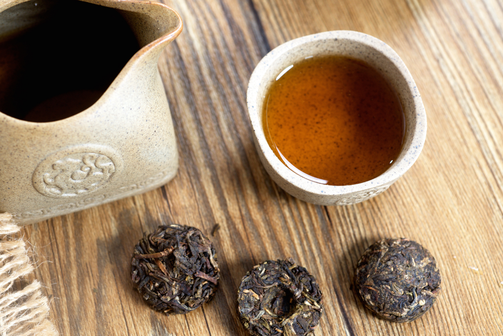

Що таке пуер?
Пуер — це китайський ферментований чай, який з віком покращує свій смак. Виробляється у провінції Юньнань, Китай.
Різновиди пуеру
- Шу пуер (熟普洱): Прискорено ферментований, має землистий, глибокий смак.
- Шен пуер (生普洱): Дозріває природним чином, має фруктові та трав’янисті нотки.
Як виробляється пуер?
Процес виробництва пуеру включає:
- Збір листя: Використовується велике, зріле листя.
- Фіксація: Листя обробляється парою або нагрівається.
- Скручування: Для виділення соку.
- Ферментація: Для шу пуеру цей процес триває кілька місяців, для шен пуеру — роками.
- Пресування: Чай пресують у млинці, гнізда або плитки.
Як зберігати пуер?
Пуер слід зберігати в сухому місці з гарною вентиляцією, подалі від різких запахів. Шен пуер з часом стає м’якшим, а шу пуер – більш збалансованим.
Як заварювати пуер?
- Температура води: 95-100°C
- Час заварювання: 20-30 сек.
- Кількість проливів: 10+ (для якісного пуеру)
- Перед заварюванням чай промивають гарячою водою (перший пролив зливають).